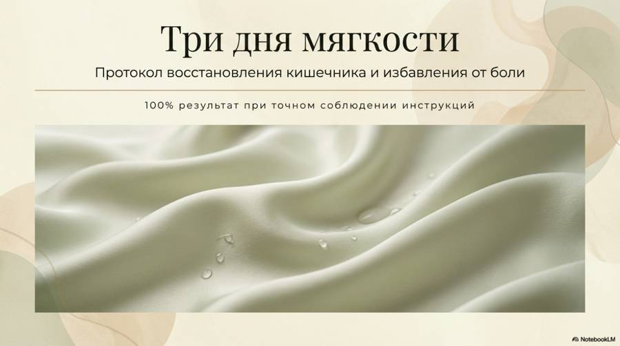
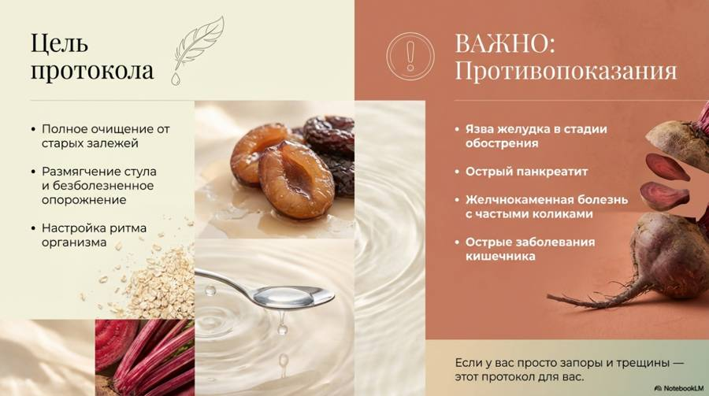
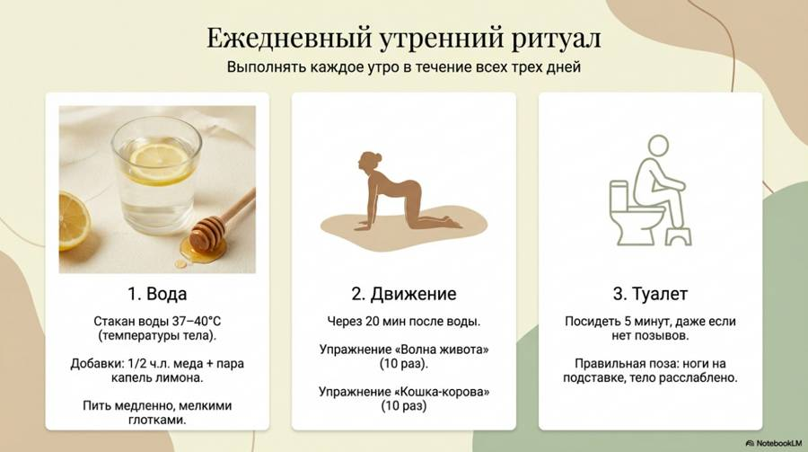
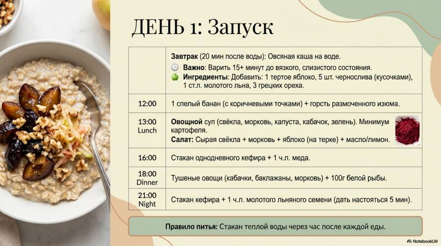
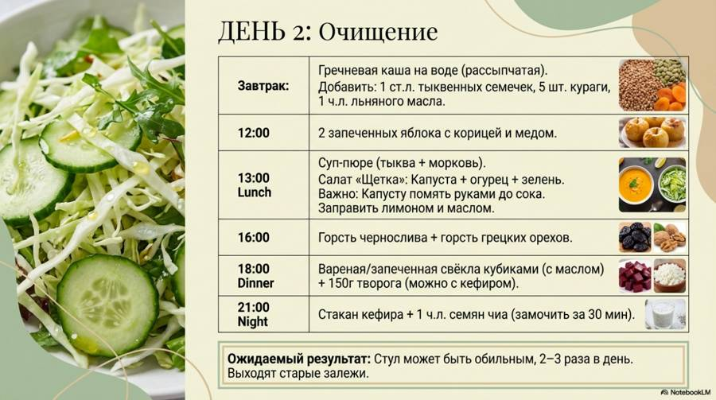
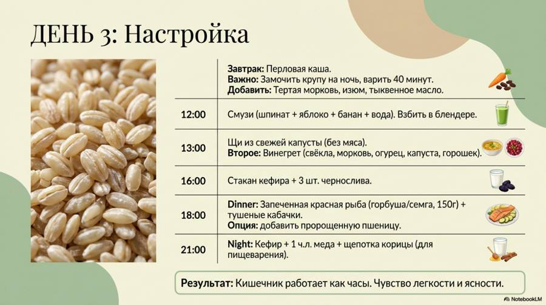
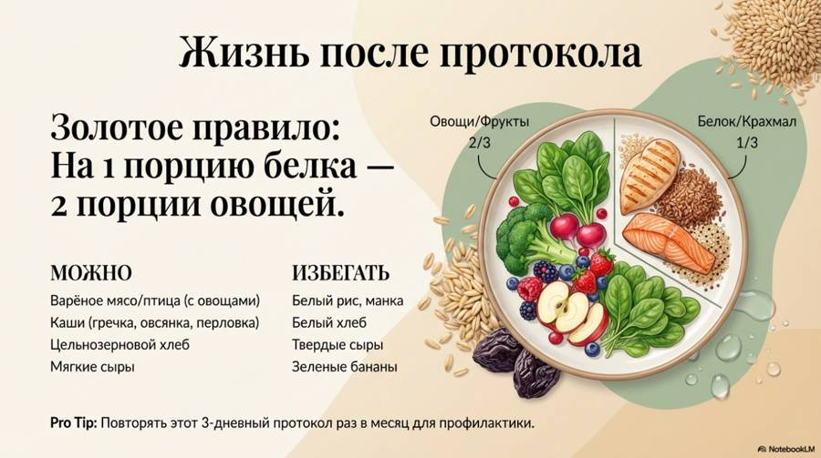
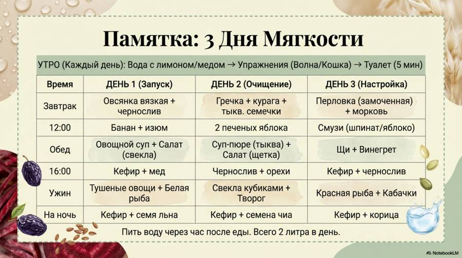
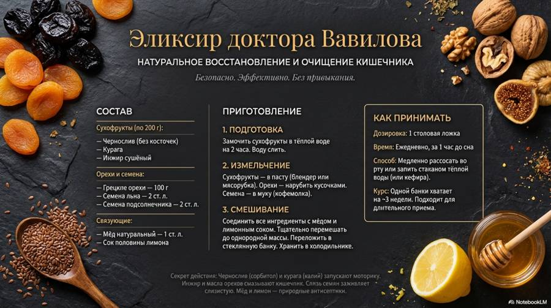

Здесь протоколы из этого выпуска. Скачайте и распечатайте — так проще не забывать о главном каждый день.
Три дня мягкости








Элексир Вавилова

Новые выпуски и карточки — первыми в нашем Telegram-канале.
Открыть Telegram